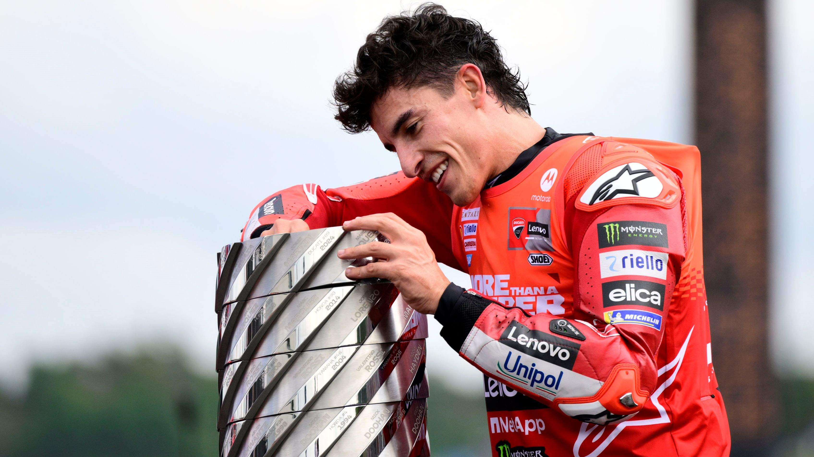

Marq Márquez
Marc Márquez es un piloto español de MotoGP nacido en 1993 en Cervera. Es uno de los motociclistas más exitosos de la historia, conocido por su estilo agresivo y espectacular. Comenzó ganando los campeonatos de 125cc en 2010 y Moto2 en 2012. Debutó en MotoGP en 2013 y ganó el título en su primer año, iniciando una época de dominio en la categoría.
A pesar de lesiones importantes y etapas difíciles, ha sabido reinventarse. Su paso reciente a Ducati marcó un nuevo impulso en su carrera, devolviéndole competitividad y confianza. Hoy sigue siendo un referente absoluto del motociclismo.
